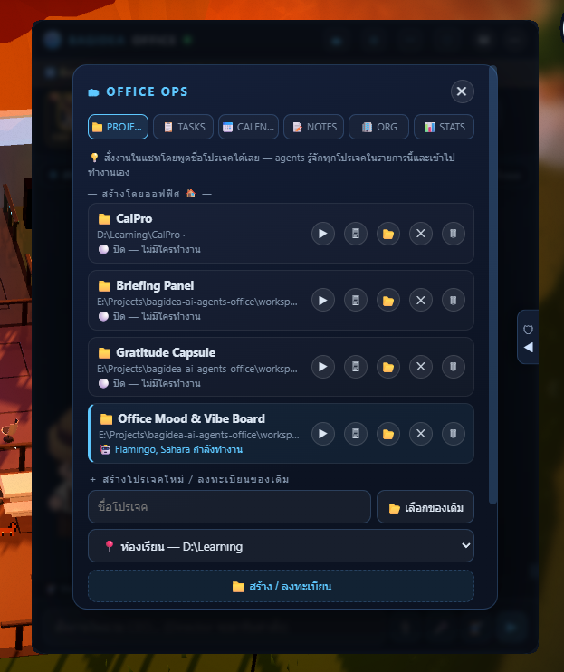
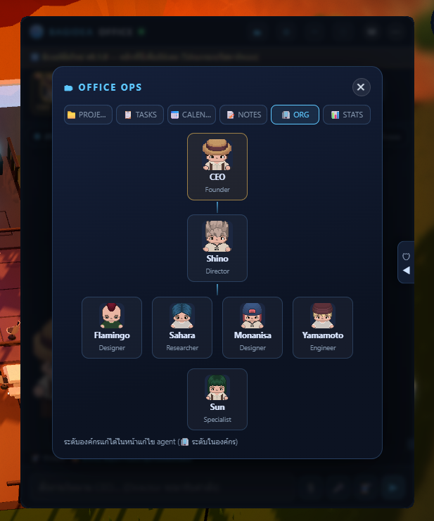
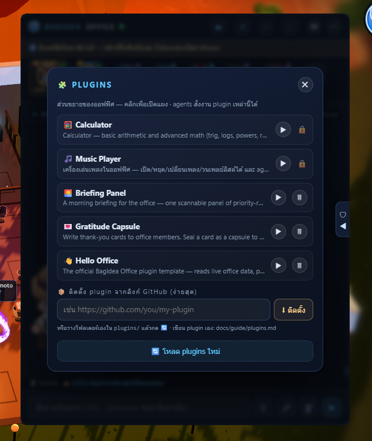

Documentation
Everything about BagIdea Office — what it is, every feature, how to install, and the full CLI.
Introduction
BagIdea Office is a living AI-agent office that runs as your Windows desktop wallpaper. Every AI agent on your machine becomes a pixel-art employee in an HD-2D office: they walk to their desks when real work starts, gather at Security to ask permission, hold meetings, learn skills, and the lights follow your real local time.
It is not a dashboard and not a chat window — it is a world that renders the true state of your Claude Code sessions, headless agent runs and custom scripts as living characters, behind your desktop icons.
Three independent layers keep it robust: a zero-dependency Node daemon (the source of truth), a Godot 4 renderer (the wallpaper), and a lightweight overlay UI (chat, settings, approvals). The daemon keeps agents running even if rendering restarts.

What it is
At its heart, BagIdea Office is an operations layer for AI agents — given a place. Instead of a flat list of tasks, you get a spatial, honest view of what your agents are actually doing:
- Real Claude Code sessions, spawned with each agent's persona, skills and allowed tools.
- A CEO → Director → team chain of command you drive by giving orders.
- Spatialized permission approvals — agents walk to Security for tools you haven't granted.
- Real project folders, resumable sessions, and self-splitting sub-agents for parallel work.
Core concepts
You are the CEO
The gold seat is you. Type an order and the Director (the main Claude agent) walks over, takes it, plans, and delegates to the team.
The Director
main is Claude itself — the office manager who answers you, creates projects, and routes work with DELEGATE lines.
Ghosts (sub-agents)
When a job parallelizes, an agent splits into translucent clones that work on the Ghost Deck and merge back with a synthesis.
The room grid
The floor is a 3×3 jigsaw of identical rooms; any room fits any slot, so you can rearrange the whole office in the editor.
Installation
Windows — one-shot installer (recommended)
Open PowerShell and run the command below. It installs every dependency (Git, Node LTS, Rust, Godot 4.6.3, Claude Code CLI), clones the app to %LOCALAPPDATA%\BagIdeaOffice, builds the desktop shell, brands the window icon, adds bagidea to your PATH, and creates a Start Menu shortcut. It is safe to re-run — each step skips what's already done.
irm https://raw.githubusercontent.com/bagidea/bagidea-office/main/installer/install.ps1 | iexManual build
Clone the repository, point the Claude hook paths at your clone, then build the Rust shell:
git clone https://github.com/bagidea/bagidea-office.git
cd bagidea-office\shell
cargo build --release # → shell/target/release/bagidea-office-shell.exeFirst run
Log in to Claude once, then start the office. Your wallpaper becomes the live office; a chat head and tray icon appear.
claude # sign in (first time only)
bagidea start # launch the officeIf the install fails
The installer is built to finish on a bare machine, but here are the common snags and their fixes. Almost all are solved by opening a NEW terminal and re-running the installer — re-runs are safe and keep your data.
Using it
Chat & the CEO
The chat panel opens on your CEO seat. Type an order in the CEO seat and the Director walks over to take it, plans, and delegates — you watch the hand-offs on the wallpaper, and the summary is walked back to you. To talk to any agent directly, click their face in the rail or on the live map. Every conversation is a resumable thread with full history.

Projects
Register real folders as projects (with PLACE shorthands like "classroom → D:\Learning"). The Director can create new projects himself and route work into them; the assignee's Claude session runs inside that directory and is resumable. One occupant at a time: while an agent works a project you can't open it (a ⏹ stop-agent button with a two-click confirm lets you take over), and while you have it open an agent won't enter.


The whole roster arranges itself into an org chart (🗂 → ORG): CEO → Director → mid → staff. Hire from ⚙ → AGENTS: name, role, avatar + aura, tier, a Persona Copilot that fills the prompt and picks fitting skills + tools, one of 16 voices, and the exact tools each agent may run.
Permissions
Tools you grant in an agent's profile run silently — and the agent never even leaves its desk. For anything else, the agent walks to the Security Center and waits while a card pops up with the exact command. Choose Allow, ✓✓ Forever (remembers the grant), or Deny. No answer in 50 seconds auto-denies and the agent re-plans.
The 3D Editor
Open the editor (the 🎨 button or bagidea editor) to rearrange the office in true 3D: click two rooms to swap them on the 3×3 grid, move the Ghost Deck, place furniture and decor, and import your own .glb/.gltf/.fbx models and images. Save and the wallpaper updates instantly — furniture, agent seats, navigation and pets all follow.

Voice & channels
Hold F6 anywhere to speak a command to the office. Give agents one of 16 TTS voices (split clearly ♀/♂). Call the main agent for a realtime voice conversation (Gemini Live) in its assigned voice. Connect Telegram, Discord or LINE and command your office from your phone — replies come back on the same channel.
Updates & start-up
A VERSION file marks real releases: the office only shows the 🔄 update banner when main's version is newer than yours, so routine commits never nag you. Click the banner or run bagidea update to pull, rebuild and relaunch (your data is kept). Set it to launch with Windows from the tray, settings, or bagidea startup on.
Plugins, skills & tools
Plugins extend the office for real — a folder with a manifest can add UI panels, HTTP routes, and commands agents can drive, with ctx access to the registry, feed, broadcasting and even running Claude turns. Two core plugins ship in the box (🎵 Music Player, 🧮 Calculator); install more from any GitHub repo. Start from the official template, or read the worked example repos.

bagidea plugin install https://github.com/bagidea/bagidea-office-templateEvery office ships with a library of builtin skills (deep research, office control, plugin building, code review, docs, debugging, data wrangling, project kickoff, diagrams) you can assign to any agent, plus Hermes-style skills the office learns automatically after real work. Add new raw capability via MCP servers.
Languages
The whole interface supports 14 languages. English is the default; pick another in settings and the office translates office-wide (and remembers your choice per machine). This website speaks the same 14 languages — use the picker in the top bar.
en ไทย 中文 Español हिन्दी العربية Português Русский 日本語 Deutsch Français 한국어 Indonesia Tiếng Việt
CLI reference
The installer puts bagidea on your PATH. It talks to the running office and can start it. A few highlights:
| Command | Does |
|---|---|
bagidea start | stop | restart | Launch / stop / restart the whole suite |
bagidea status | Health + agents + projects + who's working |
bagidea stats | Dashboard: runs / cost / busiest / uptime |
bagidea ask "<message>" | Order the Director and wait for the final answer |
bagidea chat <agent> "<msg>" | Hand a task to a specific agent (fire-and-forget) |
bagidea agents · projects | List staff / projects with live status |
bagidea open "<project>" | Open a project window (same as ▶) |
bagidea proposals | Team project pitches awaiting a verdict |
bagidea proposal show <id> | Read a pitch in full |
bagidea proposal approve|reject <id> [note] | Decide on a pitch (+ optional note to the team) |
bagidea plugins | List installed plugins |
bagidea plugin install <git-url> · remove <id> | Add / remove a plugin |
bagidea lang <code> | Show / set the office language (14 languages) |
bagidea say "<text>" · voices | Speak via TTS · list voice presets |
bagidea image "<prompt>" | Generate an AI image into the office |
bagidea channels · keys | Channel + API-key status |
bagidea feed | Live office event stream in your terminal |
bagidea startup [on|off] | Launch the office with Windows (show / set) |
bagidea update · version | Update to the latest release · show current version |
bagidea --help · --version | Full command list / current build |

FAQ
Does it cost money to run?
The app is free and open source (MIT). Agents run through your own Claude Code login, so usage follows your existing Claude account or subscription — there is no separate BagIdea fee.
Is my code/data sent anywhere?
The daemon runs locally on 127.0.0.1. Agents are Claude Code sessions, so they use Claude like any Claude Code project. Optional features (voice, image, realtime) use your own OpenAI/Gemini keys only when you enable them.
Which platforms are supported?
Windows 11 today. Linux and macOS wallpaper backends are on the roadmap.
Can I build my own plugin?
Yes — fork the official template repo. A person or an agent can build a working plugin from it in minutes; the full spec is in the plugin guide.